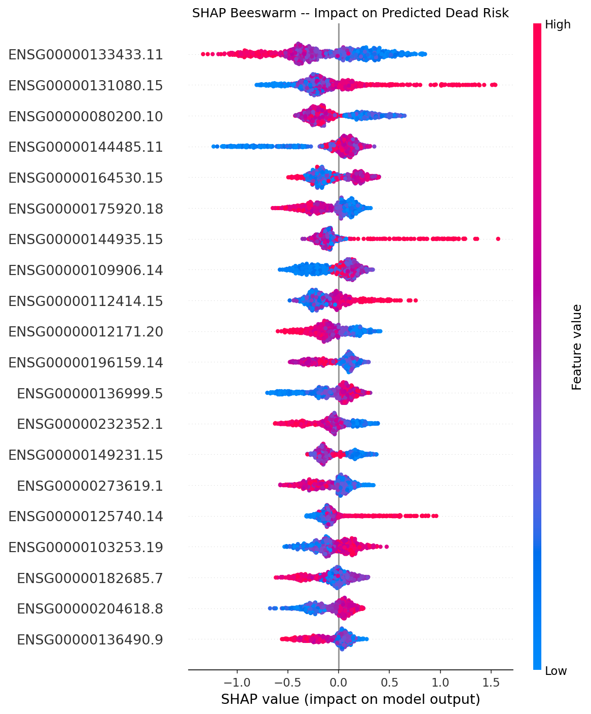

Data Overview
What went into the model
RNA-Seq gene expression and clinical outcome data from the TCGA-BRCA breast cancer cohort, sourced via the GDC Hub.
Model Results
Stacking ensemble performance
Random Forest and XGBoost base learners feeding a Logistic Regression meta-learner, evaluated on a held-out test split.
Biomarker Panel
Selected via MAD filtering + ANOVA F-test
(SelectKBest). Ranked by mean |SHAP|.
Explainability
What the model actually learned
Exact Tree SHAP on the XGBoost base learner, run against the 100-gene biomarker panel.
SHAP Beeswarm Plot

Beeswarm plot not found here.
Expected at
reports/figures/shap_beeswarm_vital_status.png